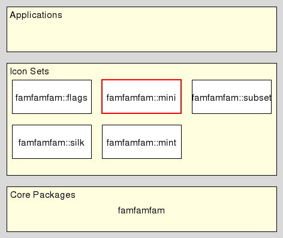

famfamfam::mini - FamFamFam Mini Icon Set
Welcome to famfamfam, a set of packages providing access to the same-named icon sets created by Mark James, at http://www.famfamfam.com/lab/icons/
This package provides a programmatic interface to the FamFamFam Mini Icon Set. It enables the user to access any of the icons in the set by name.
It resides in the Icon Set level of the architecture 
This command returns a Tk image holding the mini icon whose name was specified as argument of the command. An error will be thrown instead if the name is not valid.
This command returns a list containing the names of all valid mini icons accessible through the package. If the pattern is specified then only names matching that pattern are returned. Matching is done by string match, i.e. the argument is a glob pattern.
This command returns the absolute path of the file containing the mini icon whose name was specified as argument of the command. An error will be thrown instead if the name is not valid.
package require famfamfam::mini set w [famfamfam mini list w*] set box [famfamfam mini get box]
Code by Andreas Kupries.
The underlying Icon Set however was created by Mark James and is available for free under a Creative Commons Attribution 2.5 License.
Per the terms of this license we give attribution, see the previous paragraph, and section (References).
This document, and the package it describes, will undoubtedly contain bugs and other problems. Please report such at the FamFamFam Tcl Tracker. Please also report any ideas for enhancements you may have for either package and/or documentation.
Icon sets
Copyright © 2012 Andreas Kupries <andreas_kupries@users.sourceforge.net>
Copyright © 2012 Documentation, Andreas Kupries